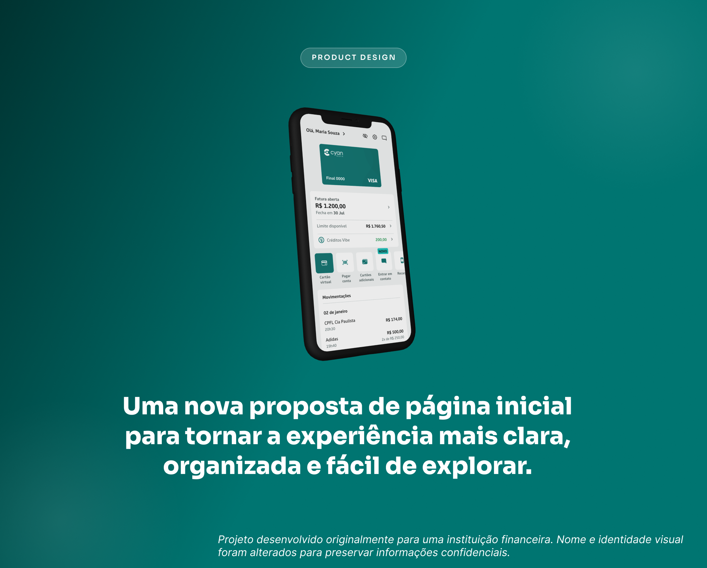
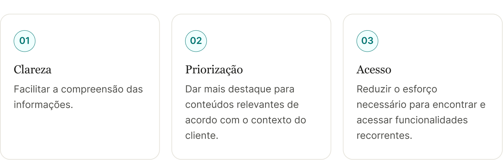
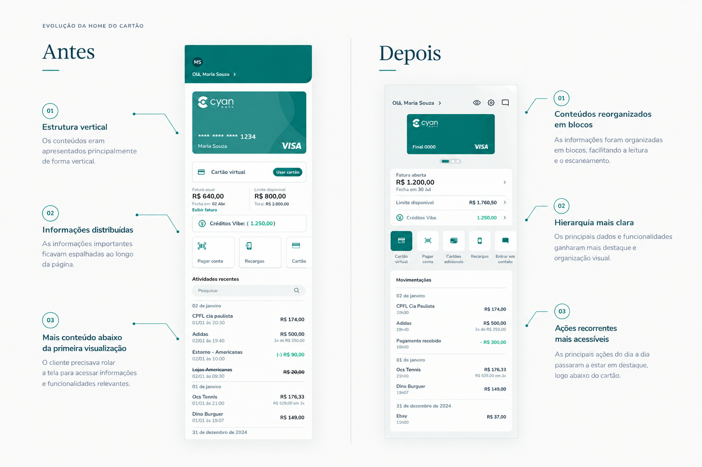
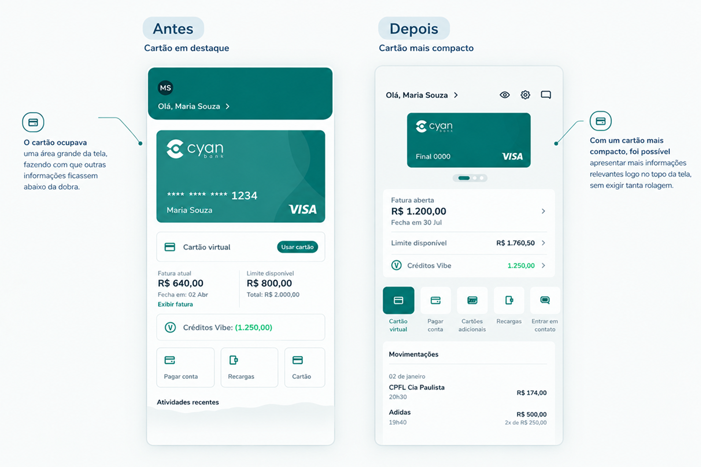
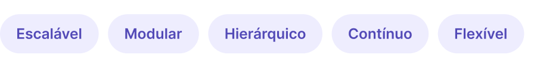
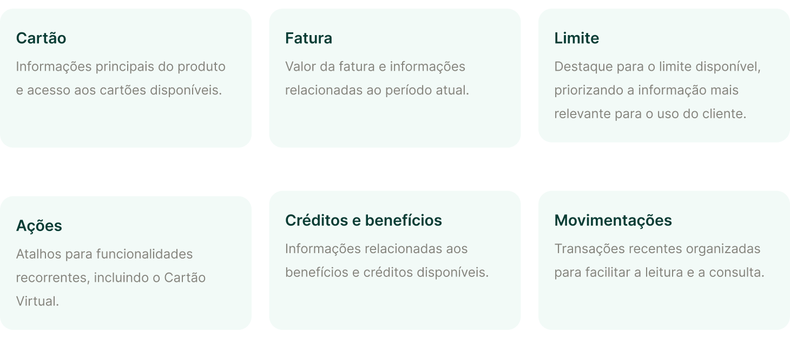
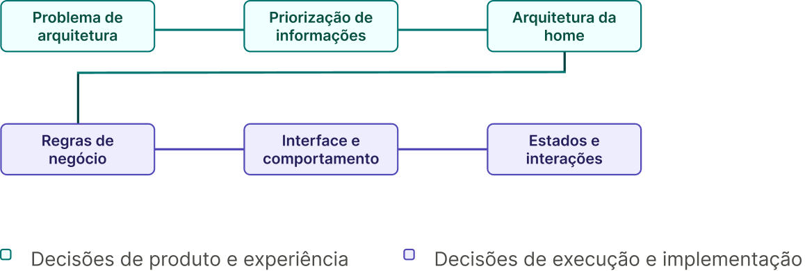
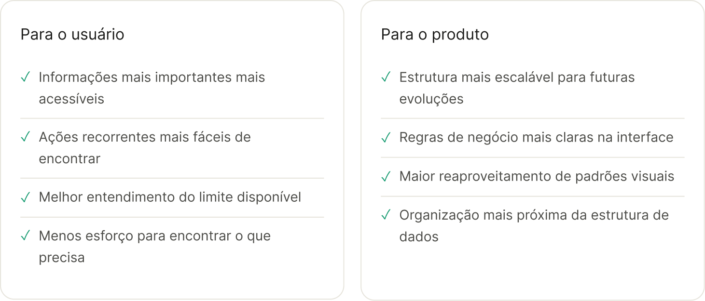

Redesign da página inicial do app bancário
Uma nova proposta de página inicial para tornar a experiência mais clara, organizada e fácil de explorar.

Visão geral
A página inicial é um dos principais pontos de contato do cliente com o aplicativo. É a partir dela que o usuário acompanha informações importantes do cartão, consulta sua situação financeira e acessa funcionalidades recorrentes.
Em 2026, o Cyan Bank priorizou um projeto de evolução para seu aplicativo, contemplando três grandes frentes:
- Correções funcionais;
- Evolução da experiência da página inicial;
- Evolução da jornada de Atualização Cadastral.
Dentro dessa iniciativa, o time de UX trabalhou na evolução da experiência da Home do Cartão, buscando não apenas corrigir problemas existentes, mas repensar a forma como as principais informações e funcionalidades eram apresentadas ao cliente.
O desafio
A Home anterior concentrava diferentes informações e funcionalidades em uma mesma estrutura, fazendo com que conteúdos de diferentes níveis de importância competissem visualmente entre si.
Embora o cliente tivesse acesso aos principais recursos, era possível tornar a experiência mais simples de compreender e mais rápida de escanear.
O desafio tinha três perguntas norteadoras:
- Como facilitar a identificação das informações mais importantes?
- Como tornar as principais ações mais acessíveis?
- Como manter as funcionalidades essenciais sem perder escaneabilidade?
Por isso, a solução precisava equilibrar:

ANTES - DEPOIS
A experiência anterior apresentava os conteúdos principalmente de forma vertical, fazendo com que informações importantes pudessem ficar abaixo da primeira visualização de tela.
Na nova Home, os conteúdos foram reorganizados em blocos, criando uma hierarquia mais clara e facilitando o escaneamento.
A mudança não é apenas visual. Cada alteração parte de uma necessidade específica.

Principais decisões de design
Menos espaço para o cartão, mais espaço para o que importa
A representação do cartão foi reduzida para aproveitar melhor o espaço da primeira visualização.
Na experiência anterior, o cartão ocupava uma área significativa da tela e fazia com que informações como fatura, limite disponível e ações rápidas ficassem abaixo da dobra em muitos dispositivos.
Com um cartão mais compacto, foi possível apresentar mais informações relevantes sem exigir tanta rolagem.
A decisão não foi diminuir a importância do cartão, mas equilibrar sua presença com as demais informações essenciais da Home.

Mostrar tudo ou mostrar o que realmente importa?
Na nova Home, a Limite Total foi removida. Passaram a aparecer apenas Fatura Atual e Limite Disponível.
A decisão foi apoiada por feedback de produtos financeiros e, principalmente, na relevância da informação para o cliente. Enquanto o limite total é uma informação mais estática, o limite disponível responde a uma necessidade recorrente.
“Quanto eu ainda posso utilizar?”
A remoção também reduziu a quantidade de informações simultâneas, tornando a leitura mais rápida e objetiva.
Remover um card não significa remover uma funcionalidade
O card exclusivo do Cartão Virtual foi removido porque a funcionalidade já existia na seção de Ações.
Em vez de manter dois pontos de acesso à mesma funcionalidade, o Cartão Virtual passou a ocupar uma localização de destaque visual, recém-recriada na nova estrutura.
A decisão considerou não apenas onde colocar a funcionalidade, mas também como ajudar o usuário a se adaptar à nova experiência.
Solução
A nova Home foi construída a partir dos princípios do Bento Design, utilizando blocos modulares para organizar informações e funcionalidades. Mais do que uma escolha estética, o conceito ajudou a estabelecer diferentes níveis de prioridade e criar uma experiência mais:

Cada bloco passou a ter uma função mais clara dentro da experiência.
Organização
A nova estrutura reorganiza os principais conteúdos da Home em grupos mais fáceis de compreender:

Conectando UX, UI, negócio e tecnologia
O projeto envolveu diferentes camadas de decisão, da definição do problema até os estados de interação, passando por priorização, arquitetura, interface e regras de negócio.

Essa abordagem permite que o time de design tenha, além de uma visão macro, uma visão estruturada da experiência de produto.
Impacto para usuário e para o produto
A nova Home estabelece uma estrutura mais organizada, modular e adaptável à experiência.

Conclusões
Esse projeto reforçou como o Product Design vai além de garantir uma boa experiência, envolvendo também a compreensão do contexto e o questionamento de como cada decisão pode impactar a jornada do usuário.
A principal lição foi perceber que, muitas vezes, retirar uma informação é tão importante quanto adicionar uma nova, desde que isso contribua para simplificar o que realmente importa.
No final, o objetivo era criar uma Home mais consistente e clara, contribuindo para uma experiência mais fluida como um todo.
Obrigada pela Leitura!
Este case reflete como combinar pensamento de produto, regras de negócio e experiência do usuário pode resultar em soluções financeiras melhores, mais seguras e mais humanas.